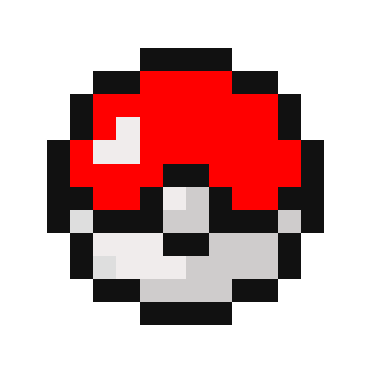
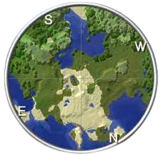

Lucky Block
É um bloco da sorte que escolhe aleatoriamente um dos mais de 100 resultados possíveis.
Estes cobrem a maioria dos componentes do jogo, incluindo itens, baús, monstros,
estruturas, poções, encantamentos, etc.

Pixelmon
O mod apresenta a jogabilidade de captura de criaturas de Pokèmon no universo de blocos de Mojang.
Você encontrará Pokémon vagando pelos biomas do Minecraft e poderá lutar, capturar e coletar
cada um deles.

Xaero's World Map
O minimapa ajuda na sua localização, e exibi jogadores, mobs e itens no mapa.
Além das direções padrão da bússola , você pode colocar seus próprios waypointsque são visíveis
tanto no minimapa quanto no mundo do jogo.